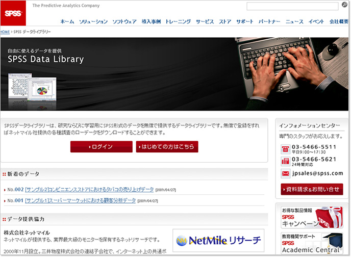

SPSS社とネットマイル社、教育機関サポート事業で協力
「SPSS Academic Central」内で
「ネットマイルリサーチ」調査レポートの提供開始
予測分析ソフトウェアならびにソリューションを提供するエス･ピー･エス･エス株式会社（本社：東京都渋谷区、社長：ジェイ パウエル、以下SPSS社）とインターネット上の共通ポイントプログラムを運営する株式会社ネットマイル（本社：東京都千代田区、代表取締役社長：山本雅）が業務協力し、SPSS社の教育機関サポートサイト「SPSS Academic Central」内の「SPSSデータライブラリー」で、ネットマイル社の提供するインターネットリサーチサービス「ネットマイルリサーチ」の自主調査データを無料でダウンロードできるサービスを、本日6月23日より開始いたします。
SPSS社では、1968年の設立以来40年間、初心者から高度な分析を必要とする研究者まで、わかりやすい操作性と高度な分析を備えたデータ分析ソフトウェアやサービスの提供を継続的に教育機関向けに行っており、日本市場でも20年来、教育機関におけるデータ分析教育や研究促進をサポートしてきました。その結果、現在では、国内80％以上の大学においてユーザーが存在する分析ソフトウェアのスタンダードとして、全世界で28万人、国内3万人以上のユーザーに利用されています。一方、教育機関では、大学生や大学院生の研究や論文作成時に利用できるデータ教材が少なく、自由に活用できるデータを望む声がありました。
また、ネットマイル社では、2005年にインターネットリサーチサービス「ネットマイルリサーチ」を立ち上げ、共通ポイントプログラム「ネットマイル」の大規模なユーザーを対象に、2006年8月より約140本の自主調査データを蓄積してきました。
そこで、今回の業務協力により「ネットマイルリサーチ」の自主調査データを「SPSS Academic Central」内から自由にダウンロードできるようにし、SPSS社のソフトの利用促進と、無料で利用できることでユーザーの利便性向上を図ります。
サービス概要
| サービス開始日 | 2009年6月23日（火） |
|---|---|
| サービスの内容 | 「SPSS Academic Central」内の「SPSSデータライブラリー」で「ネットマイルリサーチ」の自主調査データが無料（登録制）でダウンロードできます。 |
| URL | http://www.spss.co.jp/datalibrary/ |
「SPSSデータライブラリー」画面
【エス･ピー･エス･エス株式会社について】 http://www.spss.co.jp/
SPSSは、予測分析（Predictive Analytics)ソフトウェアとソリューションを提供するリーディングカンパニー。SPSS製品は、データ収集、統計、モデリング、展開の4つの製品ラインから構成されています。SPSSは、データ分析をビジネスプロセスに組み込み、顧客や従業員の態度や意見を捉え、将来の行動を予測し、それらの結果を意思決定に活用することを可能にします。SPSSのテクノロジーは、世界中の民間企業、政府機関、そして教育機関の顧客から、新規顧客獲得、解約防止、顧客育成、不正検知およびリスク軽減などに利用され、組織の競争優位性の源泉として活用されています。1968年創立、本社イリノイ州シカゴ。
| 社名 | エス･ピー･エス･エス株式会社 |
|---|---|
| 社長 | ジェイ パウエル |
| 所在地 | 〒150-0012 東京都渋谷区広尾1丁目1番地39号 恵比寿プライムスクェアタワー 10F |
| 資本金 | 11.2百万円 |
| 設立 | 1988年10月31日 |
| 事業内容 | コンピュータソフトウェアの開発、販売、賃貸、輸出入 |
| サービスサイト | http://www.spss.co.jp/ |
【株式会社ネットマイルについて】 http://biz.netmile.co.jp/
2000年11月設立。三井物産株式会社の連結子会社で、インターネット上の共通ポイントプログラム「ネットマイル」を運営。同社のIT事業戦略の一端を担う。
「ネットマイル」は、2001年4月にサービスを開始。累計加盟サイト数1,000サイト、累計登録会員数約409万人（2009年5月末現在）の規模は、日本最大級。
【「ネットマイルリサーチ」について】 http://research.netmile.co.jp/
「ネットマイルリサーチ」とは、ネットマイル社が運営するインターネット上の共通ポイントプログラム「ネットマイル」の累計登録会員数409万人を調査モニターとして活用した、圧倒的なモニター数を誇るインターネット調査サービスです。
| 社名 | 株式会社ネットマイル |
|---|---|
| 代表取締役社長 | 山本 雅 |
| 所在地 | 〒102-0083 東京都千代田区麹町2-4 麹町鶴屋八幡ビル 8F |
| 資本金 | 396百万円 |
| 設立 | 2000年11月7日 |
| 事業内容 |
|
| 出資企業 | 三井物産株式会社、トランスコスモス株式会社 他 |
| サービスサイト | http://www.netmile.co.jp/ |
【当リリースに関する一般お問合せ先】
エス･ピー･エス･エス株式会社 マーケティング部
Email ：
株式会社ネットマイル リサーチ事業部
Email ： 
【当リリースに関する報道関係者お問合せ先】
エス･ピー･エス･エス株式会社 広報担当 ： 畠
Email ：
TEL ：
株式会社ネットマイル 広報担当 ： 村井
Email ： 
TEL ：